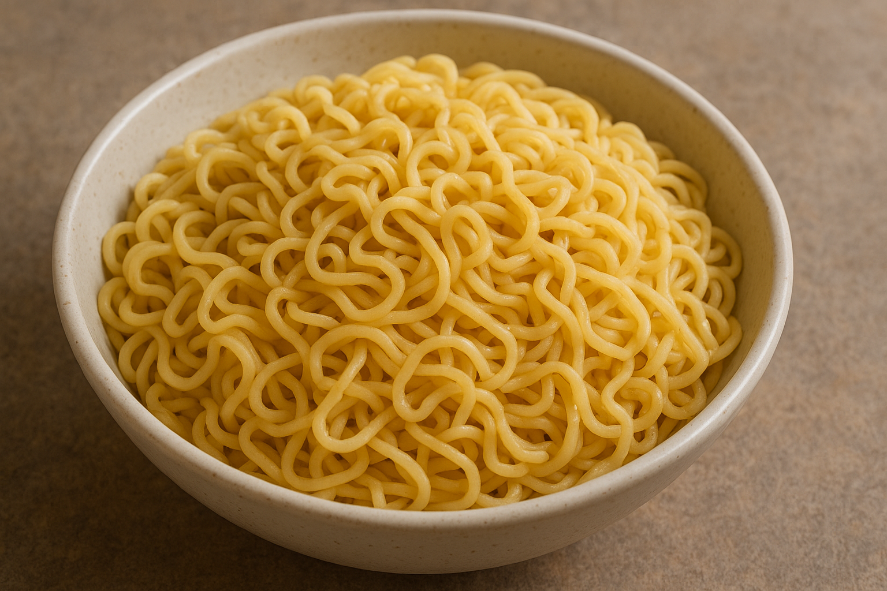

Om Rätten

Hur fan gör man det här då?
- Häll vattnet i kastrullen och börja värm
- Vänta till vattnet kokar
- När vattnet kokar, öppna nudelpaketet och lägg i nudlarna.
- Addera medföljande krydda
- När du är nöjd med nudlarnas konsistens, stäng av värmen och sila ut vattnet.
- Placera nudlarna i en skål
- klar klar klar